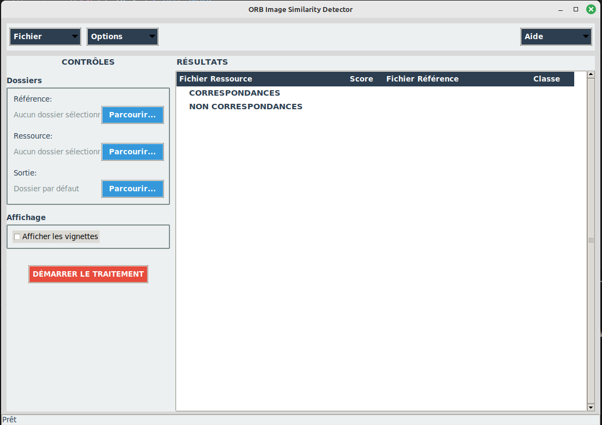
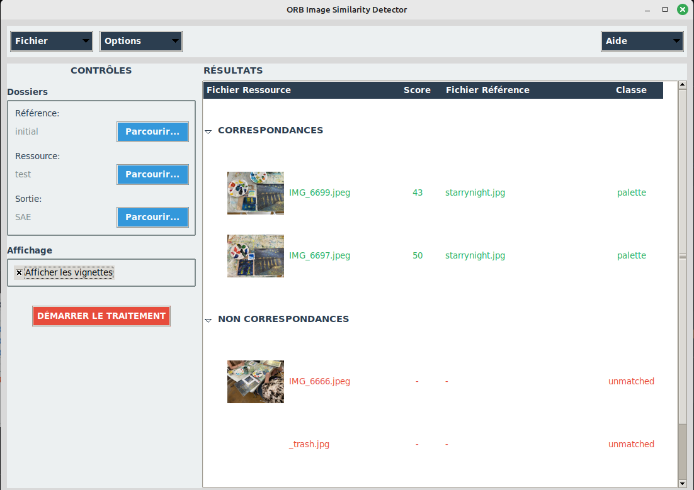
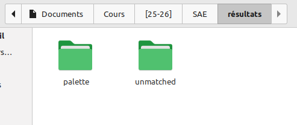

Projet de la SAÉ-S5.A.01
Ce projet consistait à developper un algorithme Python pour une association nommée "la couverture verte" à Arles dans le cadre d'une SAÉ (Situation d'Apprentissage et d'Évaluation), le programme devait être capable d'identifier et de trier des tableaux de Vincent Van Gogh dans des photos prises lors des ateliers de l'association.
Le travail s'est concentré principalement sur le développement d'un algorithme capable de correctement identifier des tableaux de Van Gogh parmi une collection de photos. C'était un projet de groupe donc chacun s'était mis d'accord sur un type d'algorithme à utiliser, ensuite, nous avons choisi la meilleure approche pour implémenter notre solution, en nous assurant de répondre aux autres exigences de l'association.
Screenshots


